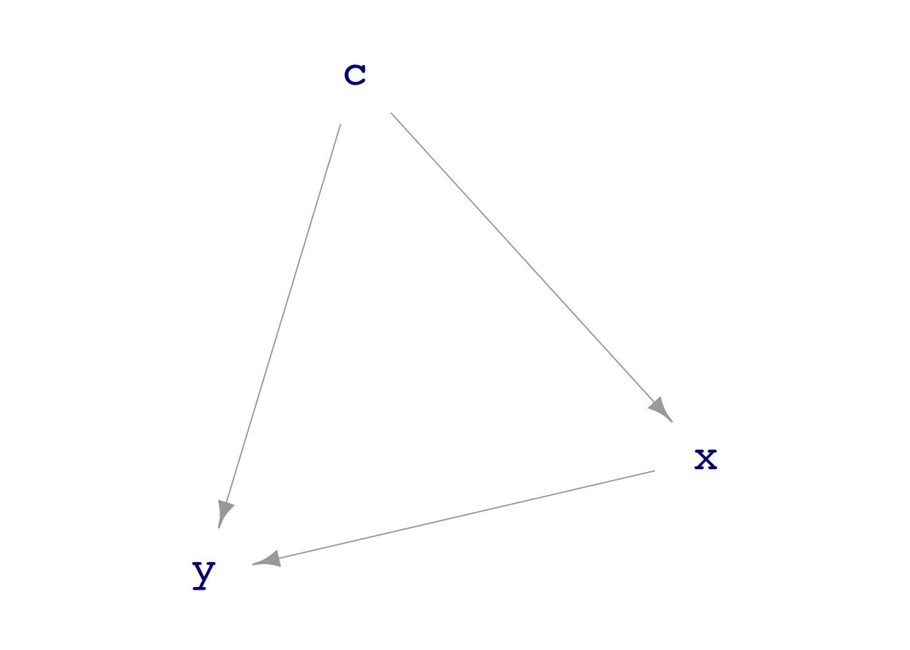

Instructor Teaching Notes for Lesson 37
Math300Z
Review of Lesson 36
We introduced hypothesis testing. This is a simple procedure that results in one of two possible outcomes: “reject the Null” or “fail to reject the Null.”
“The Null” refers to the “Null hypothesis.” Like all hypotheses, the Null might or might not be true. The point of the Null is to play the role of a devil’s advocate claiming, “your results are nothing new” or “there is no relationship of interest.”
In the regression framework, the operational definition of the Null is that the coefficient of interest would be found to be zero if a sufficient amount of data were collected. Or, in terms of the devil’s advocate: Anything non-zero is the result of sampling variation resulting from too small a sample.
The hypothesis testing calculation is simple regarding the relationship between the response variable and the explanatory variable of interest: Find a p-value on the coefficient for the explanatory variable. Model summary software does this automatically; you just have to ask for the p-value to be reported.
With the p-value in hand, you check whether \(p < 0.05\). If so, “reject the Null.” Otherwise, “fail to reject the Null.”
In Lesson 38, we will show some of the ways that p-values are misleading or abused in order for you to avoid being misled.
Our agenda today, Lesson 37, is:
- Show that the hypothesis testing conclusions—reject or fail to reject—can be deduced simply from the confidence interval on the coefficient of interest.
- Notwithstanding (1), show you a general way to implement the calculation of a p-value. This might give you better insight to what hypothesis testing is about.
- Generalize hypothesis testing to a broader context where multiple coefficients might be simultaneously of interest.
Using a confidence interval to implement hypothesis testing
DAGs represent the question of connections between variables in a graphical way, as an arrow between nodes. A DAG is a hypothesis. Very often in drawing a DAG we have a choice between inserting an arrow or leaving it out: a binary choice.
For instance, consider this DAG showing a confounder C for the relationship between X and Y:
The Null hypothesis in this situation is that there is no direct link between x and y.
We can measure the effect size of X on Y adjusting for the confounder C with the model specification y ~ x + c. For instance,
set.seed(101)
Samp <- sample(abc_dag, size=50)
lm(y ~ x + c, data=Samp) |> conf_interval(level=0.75, show_p=TRUE)# A tibble: 3 × 5
term .lwr .coef .upr p.value
<chr> <dbl> <dbl> <dbl> <dbl>
1 (Intercept) -0.229 -0.0549 0.119 0.716
2 x -0.373 -0.186 -0.00000364 0.250
3 c 1.00 1.22 1.43 0.0000000347In discussing whether the data support the (direct) link between x and y, we look toward the confidence interval on the x coefficient: [-0.51 to +0.14]. This interval includes zero, so we say that “the data offer no evidence to support the link.” In the language of NHT, noticing that \(p = 0.25\), we “fail to reject the Null.”
Would it also be correct to say that “the data refute the existence of a link,” that is that the data point to “accept the Null?” No. There might in reality be a link but we have not collected enough data to discern it. As the saying goes:
Absence of evidence is not evidence of absence.
The formalism of NHT helps to keep our thinking straight. The only two valid conclusions are “fail to reject the Null” or “reject the Null.” “Accept the Null” is not an allowed conclusion.
The choice between the two valid conclusions—reject or fail to reject the Null—can be made directly from the confidence interval, without a p-value.
- Confidence interval includes zero: fail to reject the Null
- Confidence interval excludes zero: reject the Null
To simplify the introduction and use of confidence intervals, we did not worry about setting a parameter that goes into calculating a confidence interval: the confidence level. The justification for this omission is two-fold:
- almost always people use a confidence level of 95% so you rarely have occasion to deal with other confidence levels.
- when discussing the possibilities for different confidence levels it’s natural to wonder what is the “physical” meaning of the level.
But now we’re going to introduce confidence levels, but only for the purpose of helping to understand p-values. Some simple facts:
- the confidence level is always between 0 and 100%.
- a 0% level leads to an interval that has no length.
- a 100% level leads to an interval that has full length, e.g. between \(-\infty\) and \(\infty\) when the response variable is numerical.
- the higher the confidence level used for a given model coefficient, the longer the corresponding interval.
P-values via shuffling
The simple operation of shuffling provides a route to creating data that respects the Null hypothesis.
Code
mod <- lm(age ~ smoker, data=Whickham)
model_plot(mod, interval="confidence")
Whickham <- Whickham |> mutate(rsmoke = shuffle(smoker))
mod2 <- lm(age ~ rsmoke, data=Whickham)
model_plot(mod2, interval="confidence")
Abstractly, the p-value calculation works like this:
- Fit your model and note, for later comparison to the many trials in (3), the coefficient of interest or R2().
For example:
lm(height ~ nkids + mother + father, data=Galton) |>
conf_interval()# A tibble: 4 × 4
term .lwr .coef .upr
<chr> <dbl> <dbl> <dbl>
1 (Intercept) 15.8 24.4 33.0
2 nkids -0.195 -0.111 -0.0280
3 mother 0.186 0.282 0.378
4 father 0.270 0.361 0.452 lm(height ~ nkids + mother + father, data=Galton) |>
R2() n k Rsquared F adjR2 p df.num df.denom
1 898 3 0.1156864 38.98454 0.1127189 0 3 894The coefficient on nkids is -0.111 and R2 is 0.116.
- Fit the model as in (1), but wrap
shuffle()around the explanatory variable of interest. That will randomize the order of entries in just the explanatory variable, leaving all other variables’ entries in their original order.
For example:
lm(height ~ shuffle(nkids) + mother + father, data=Galton) |>
conf_interval()# A tibble: 4 × 4
term .lwr .coef .upr
<chr> <dbl> <dbl> <dbl>
1 (Intercept) 13.9 22.4 30.8
2 shuffle(nkids) -0.0899 -0.00716 0.0756
3 mother 0.186 0.283 0.379
4 father 0.290 0.380 0.470 The coefficient on the shuffled variable will (almost certainly) be different from the coefficient on the original variable in (1).
- Take many trials in which you generate data according to (2) and fit the model as in (1). Record the coefficients you get across the trials.
We’ve talked about repeating random trials before but you are not expected to be able to generate the code to do so. Here it is:
Trials <- mosaic::do(1000) * {
# Insert here the lm/conf_interval code you used in (2), e.g.
lm(height ~ shuffle(nkids) + mother + father, data=Galton) |>
conf_interval()
} |>
filter(grepl("shuffle", term)) |>
select(.coef)- Count the fraction of the time the coefficients in (3) have a magnitude as large or the same as the coefficient from (1). That fraction is your p-value.
Trials |>
summarize(p_value = mean(abs(.coef) > abs(-0.111))) p_value
1 0.013If you were doing this with R2, the calculations would be
R2Trials <- mosaic::do(1000) * {
# Insert here the lm/conf_interval code you used in (2), e.g.
lm(height ~ shuffle(nkids) + mother + father, data=Galton) |>
R2()
} |>
select(Rsquared)
R2Trials |>
summarize(p_value = mean(Rsquared > 0.116)) p_value
1 0.007ANOVA deals with sets of coefficients
It sometimes happens that the explanatory variable of interest is categorical with more than two levels. A case in point: the Framingham data where education has four levels: “some HS”, “HS grad”, “some college”, and “college_grad”.
Here’s a model looking at the connection between age and education (with smoking status as a covariate):
lm(age ~ education + currentSmoker, data=Framingham) |>
conf_interval(show_p=TRUE)# A tibble: 5 × 5
term .lwr .coef .upr p.value
<chr> <dbl> <dbl> <dbl> <dbl>
1 (Intercept) 49.1 49.9 50.7 0
2 educationHS grad -1.64 -0.777 0.0840 7.69e- 2
3 educationsome college -0.486 0.467 1.42 3.37e- 1
4 educationsome HS 2.83 3.66 4.49 6.76e-18
5 currentSmokersmoker -3.92 -3.42 -2.92 1.28e-40Notice that the baseline level for the education variable is college grad. Each of the other three levels gets a coefficient, a confidence interval, and a p-value.
Which of these are we to use to test the Null hypothesis that education is unrelated to age? The smallest? The biggest? The average of all three?
Since the question is about education as a whole, we want a method that produces a single summary stat for the entire variable, rather than different stats for different levels of the variable. R2 does this for us.
lm(age ~ education + currentSmoker, data=Framingham) |> R2() n k Rsquared F adjR2 p df.num df.denom
1 4133 4 0.09851066 112.7723 0.09763712 0 4 4128There is a single p-value for the whole model.
If education had been the only explanatory variable, the p-value from R2 would be solely about education. Such a test, like this,
lm(age ~ education, data=Framingham) |> R2() n k Rsquared F adjR2 p df.num df.denom
1 4133 3 0.05876712 85.93319 0.05808325 0 3 4129A NHT test in such circumstances is called “analysis of variance” or “ANOVA” for short. It is a very widely used test and amounts to asking whether the means of the multiple groups (as defined by the explanatory variable) are different from one another.
ANOVA can also be applied to models with covariates. The idea is to look at a succession of nested models, e.g. age ~ education and age ~ education + currentSmoker. Each model will produce an R2, which will get larger as more terms are added to the model.
The ANOVA report tells how much each explanatory variable contributes to the R2 of the overall model. That individual contribution (sumsq) is compared to how much remains unexplained—1 - R2—from the overall model. The individual contribution is scaled by the number of model coefficients associated with that explanatory variable, with the idea that more coefficients means less contribution (sumsq) per coefficient, or in the language of ANOVA, less contribution per “degree of freedom.”
lm(age ~ education + currentSmoker, data=Framingham) |> anova_summary()# A tibble: 3 × 6
term df sumsq meansq statistic p.value
<chr> <int> <dbl> <dbl> <dbl> <dbl>
1 education 3 17799. 5933. 89.7 3.14e-56
2 currentSmoker 1 12038. 12038. 182. 1.28e-40
3 Residuals 4128 273045. 66.1 NA NA